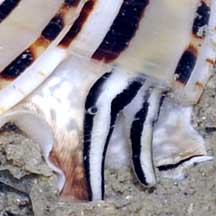
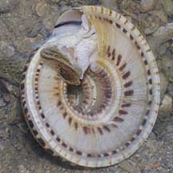

|
|
| shelled snails text index | photo index |
| Phylum Mollusca > Class Gastropoda > Family Architectonicidae |
| Clear
sundial snail Architectonica perspectiva Family Architectonicidae updated Sep 2020 Where seen? This cicular snail with a mesmerising spiral is sometimes encountered on our Southern shores on sandy areas near reefs. Elsewhere, it is considered moderately common and usually found subtidally on sandy and muddy bottoms, from depths of 10 to 120m, mostly between 10 and 65m. Features: 5-7cm in diameter. Shell thick and coils to form a disc with a flat base. Shell pattern of spirals in white, black and shades of brown. Body and fat tentacles are striped too, to match the shell. The operculum thin, flat and made of a horn-like material. |
 Sisters Island, Jan 10 |
 |
 Pulau Hantu, Mar 10 |
| What does it eat? It is said to eat burrowing sea anemones and sea pens. The mouth region is lined with a tough cuticle as a protection against stings of their prey. |

| Baby sundials: It lays long egg strings. Status and threats: The Clear sundial snail is listed as 'Endangered' in the Red List of threatened animals of Singapore. The original shores where they were found have been lost to reclamation. |
| Clear sundial snails on Singapore shores |
On wildsingapore
flickr
|
| Other sightings on Singapore shores |
| Filmed at Pulau
Hantu on 12 Apr 09 sundial snail @ Pulau Hantu 12Apr2009 from SgBeachBum on Vimeo. |
Links
References
|